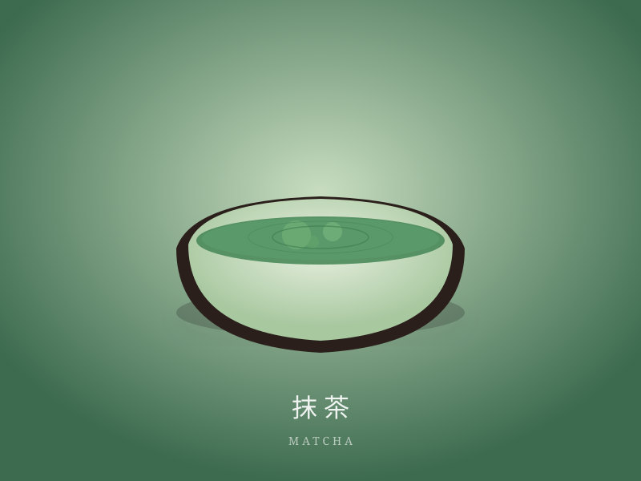
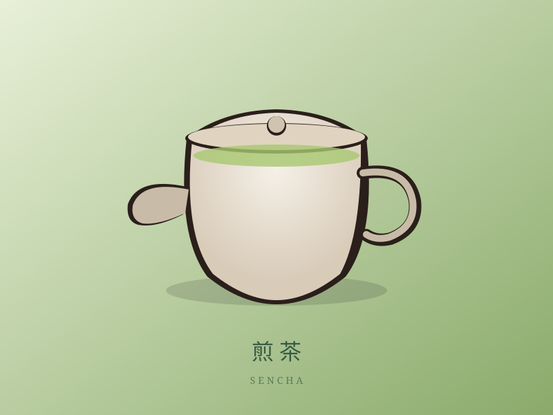
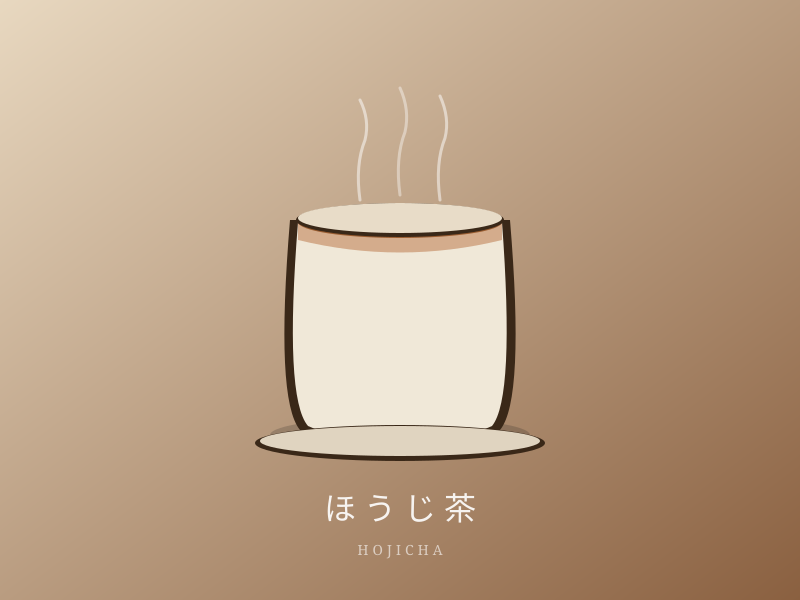
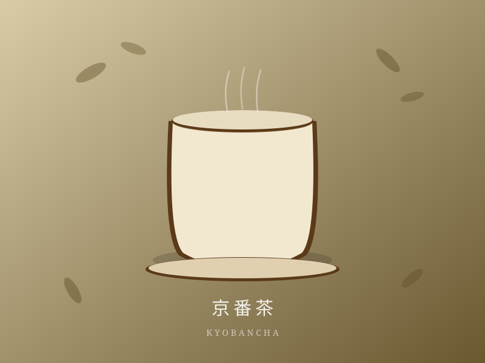

抹茶
碾茶を石臼で丁寧に挽いた、深い緑の一服。茶道に、スイーツに。

文政元年（1818年）創業
200余年にわたり京都の地で茶を守り続けてきた京都茶乃蔵。
京都の自然と職人の手仕事が生み出す、本物のお茶をお届けします。

碾茶を石臼で丁寧に挽いた、深い緑の一服。茶道に、スイーツに。

京都産の新芽をすっきりと蒸し上げた、清々しい旨みと香り。

香ばしく炒り上げた、やさしい香りと穏やかな甘み。毎日の一杯に。

独特の燻香が特徴の京都の日常茶。食事とともに、ほっとする時間を。